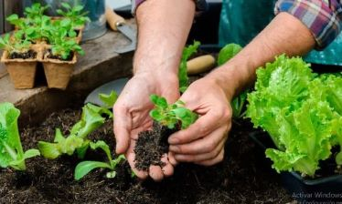

¿Qué es una huerta urbana?
Una huerta urbana es un espacio de cultivo de plantas comestibles que se encuentra dentro de un entorno urbano, como una ciudad. Estas huertas suelen incluir una variedad de cultivos, como verduras, hierbas, frutas, flores comestibles, y a menudo se utilizan técnicas de cultivo orgánico para reducir el uso de productos químicos y promover la biodiversidad.
Importancia y beneficios de la huerta urbana
Proporcionar alimentos frescos y saludables, fomentar la agricultura sostenible, promover la seguridad alimentaria local, mejorar el ambiente urbano, la calidad del aire y del suelo, y promover la cohesión social.
Objetivo de nuestra propuesta
Generar un espacio nuevo de aprendizaje en búsqueda de una mejor calidad de vida para las familias más desfavorecida en el campo y la ciudad de La Plata